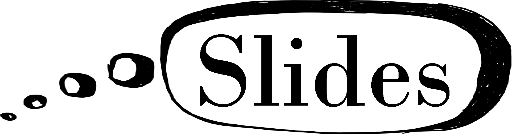
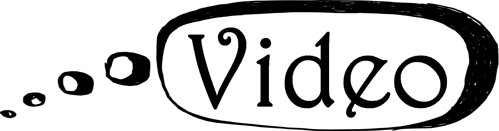

|
Karthik C. S.
NOTE: If you are preparing a bibtex entry to cite any of the papers that I have coauthored, then please write my name as {Karthik {C. S.}}. See an example here.
-
Range Longest Increasing Subsequence and its Relatives: Beating Quadratic Barrier and Approaching Optimality

Joint work with Saladi Rahul.
-
On Steiner Trees of the Regular Simplex
Joint work with Henry Fleischmann, Guillermo A. Gamboa Q., Josef Matějka, and Jakub Petr.
-
Impossibility of Depth Reduction in Explainable Clustering
Joint work with Chengyuan Deng, Surya Teja Gavva, Parth Patel, and Adarsh Srinivasan.
-
Maximum Span Hypothesis: A Weaker Assumption than Gap-ETH for Parameterized Complexity
Joint work with Subhash Khot.
SODA 2025.
-
Inapproximability of Maximum Diameter Clustering for Few Clusters
Joint work with Henry Fleischmann, Kyrylo Karlov, Ashwin Padaki, and Stepan Zharkov.
SODA 2025.
-
On Equivalence of Parameterized Inapproximability of k-Median, k-Max-Coverage, and 2-CSP

Joint work with Euiwoong Lee and Pasin Manurangsi.
IPEC 2024.
Invited to Algorithmica Special Issue for IPEC 2024.
-
On connections between k-coloring and Euclidean k-means
Joint work with Enver Aman and Sharath Punna.
ESA 2024.
-
On Inapproximability of Reconfiguration Problems:
PSPACE-hardness and some tight NP-hardness results
Joint work with Pasin Manurangsi.
-
Explicit Good Codes Approaching Distance 1 in Ulam Metric
Joint work with Elazar Goldenberg and Mursalin Habib.
ISIT 2024.
-
Conditional lower bounds for sparse parameterized 2-CSP: A streamlined proof
Joint work with Dániel Marx, Marcin Pilipczuk, and Uéverton Souza.
SOSA 2024.
- On Approximability of Steiner Tree in L_p-metrics

Joint work with Henry Fleischmann and Surya Teja Gavva.
SODA 2024.
-
Clustering Categorical Data: Soft Rounding k-modes
Joint work with Surya Teja Gavva and Sharath Punna.
Information and Computation , 296(1): 105-115, 2024.
- Fairness of Linear Regression in Decision Making
Joint work with Vincent Cohen-Addad, Surya Teja Gavva, Claire Mathieu, and Namrata.
International Journal of Data Science and Analytics, 18(3): 337-347, 2024.
- On Complexity of 1-Center in Various Metrics
Joint work with Amir Abboud, MohammadHossein Bateni, Vincent Cohen-Addad, and Saeed Seddighin.
APPROX 2023.
-
Can You Solve Closest String Faster than Exhaustive Search?
Joint work with Amir Abboud, Nick Fischer, Elazar Goldenberg, and Ron Safier.
ESA 2023.
- Obtaining Approximately Optimal and Diverse Solutions via Dispersion
Joint work with Jie Gao, Mayank Goswami, Meng-Tsung Tsai, Shih-Yu Tsai, and Hao-Tsung Yang.
LATIN 2022.
- Almost Polynomial Factor Inapproximability for Parameterized k-Clique
Joint work with Subhash Khot.
CCC 2022.
Invited to ToC Special Issue for CCC 2022.
- Johnson Coverage Hypothesis: Inapproximability of
k-means and k-median in L_p-metrics
Joint work with Vincent Cohen-Addad and Euiwoong Lee.
SODA 2022.
- Applications of Random Algebraic Constructions to
Hardness of Approximation
Joint work with Boris Bukh and Bhargav Narayanan.
FOCS 2021.
To appear in Israel Journal of Mathematics.
- Deterministic Replacement Path Covering
Joint work with Merav Parter.
SODA 2021.
To appear in ACM
Transactions on Algorithms (TALG).
- On Approximability of Clustering Problems Without Candidate Centers
Joint work with Vincent Cohen-Addad and Euiwoong Lee.
SODA 2021.
- On Hardness of Approximation of Parameterized Set Cover and Label Cover: Threshold Graphs from Error Correcting Codes
Joint work with Inbal Livni Navon.
SOSA 2021.
- On Communication Complexity of Fixed Point Computation
Joint work with Anat Ganor and Dömötör Pálvölgyi.
ACM Transactions on Economics and Computation (TEAC), 9(4): 25:1-25:27, 2021.
- Parameterized Intractability of Even Set and Shortest Vector Problem
Joint work with Arnab Bhattacharyya, Édouard Bonnet, László Egri, Suprovat Ghoshal, Bingkai Lin, Pasin Manurangsi, and Dániel Marx.
Journal of the ACM (JACM), 68(3): 16:1-16:40, 2021.
Preliminary version with Arnab Bhattacharyya, Suprovat Ghoshal, and Pasin Manurangsi appeared in
ICALP 2018.
- On Efficient Low Distortion Ultrametric Embedding
Joint work with Vincent Cohen-Addad and Guillaume Lagarde.
ICML 2020.
- A Survey on Approximation in Parameterized Complexity: Hardness and Algorithms
Joint work with Andreas Emil Feldmann, Euiwoong Lee, and Pasin Manurangsi.
Algorithms, 13(6), 146, 2020.
- Hardness Amplification of Optimization Problems
Joint work with Elazar Goldenberg.
ITCS 2020.
- Inapproximability of Clustering in L_p-metrics
Joint work with Vincent Cohen-Addad.
FOCS 2019.
- On Closest Pair in Euclidean Metric: Monochromatic is as Hard as Bichromatic
Joint work with Pasin Manurangsi.
ITCS 2019.
Combinatorica, 40(4): 539-573, 2020.
- On the Parameterized Complexity of Approximating Dominating Set
Joint work with Bundit Laekhanukit and Pasin Manurangsi.
STOC 2018.
Journal of the ACM (JACM), 66(5): 33:1-33:38, 2019.
Invited to SICOMP Special Issue for STOC 2018 (regretfully declined ).
Invited to HALG 2019.
Here is a brief desription of the result in FPT News: The Parameterized Complexity Newsletter.
- On the Complexity of Closest Pair via Polar-Pair of Point-Sets
Joint work with Roee David and Bundit Laekhanukit.
SoCG 2018.
SIAM Journal on Discrete Mathematics (SIDMA), 33(1): 509-527, 2019.
- Towards a General Direct Product Testing Theorem
Joint work with Elazar Goldenberg.
FSTTCS 2018.
ACM Transactions on Computation Theory (TOCT), 12(1): 7:1-7:18, 2020.
- Communication Complexity of Correlated Equilibrium in Two-Player Games
Joint work with Anat Ganor.
APPROX-RANDOM 2018.
- Ham Sandwich is Equivalent to Borsuk-Ulam
Joint work with Arpan Saha.
SoCG 2017.
- An Efficient Representation for Filtrations of Simplicial Complexes
Joint work with Jean-Daniel Boissonnat.
SODA 2017.
ACM
Transactions on Algorithms (TALG), 14(4): 44:1-44:21, 2018.
- Did the Train Reach its Destination: The Complexity of Finding a Witness
Information Processing Letters (IPL), 121(5): 17-21, 2017.
- On the Sensitivity Conjecture for Disjunctive Normal Forms
Joint work with Sébastien Tavenas.
FSTTCS 2016.
- Building Efficient and Compact Data Structures for Simplicial Complexes
Joint work with Jean-Daniel Boissonnat and Sébastien Tavenas.
SoCG 2015.
Algorithmica, 79(2): 530-567, 2017.
|